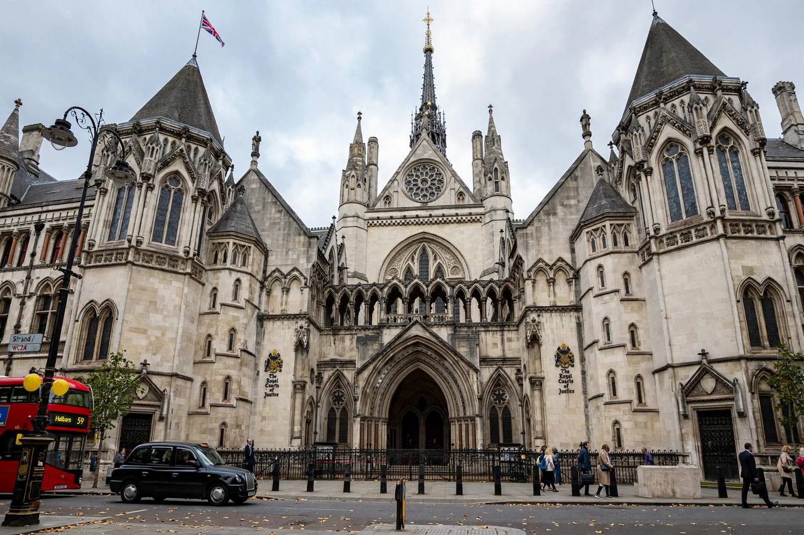

Judicial Appointments Commission

| Judicial Appointments Commission | |
|---|---|
| Formed | 3 April 2006 |
| Jurisdiction | England and Wales (courts and most tribunals) |
| Type | Executive non-departmental public body |
| Parent | Ministry of Justice |
| Basis | Constitutional Reform Act 2005 |
The Judicial Appointments Commission (JAC) is an executive non-departmental public body of the United Kingdom's Ministry of Justice, responsible for selecting candidates for judicial office in England and Wales on merit and good character. It was established on 3 April 2006 under the Constitutional Reform Act 2005, which removed the selection of judges from the Lord Chancellor in order to strengthen the independence of the judiciary and public confidence in the appointments process.
Role and process
The Commission runs open competitions for most courts and tribunal appointments in England and Wales, from fee-paid (part-time) tribunal judges to senior posts such as High Court judges; appointments to the Court of Appeal and the UK Supreme Court involve separate arrangements with JAC participation for some roles. Selection must be solely on merit, and the Commission has a statutory duty to have regard to the need to encourage diversity in the range of persons available for selection. It recommends a single candidate for each vacancy to the Lord Chancellor, who may accept, reject once, or ask for reconsideration once, in each case giving reasons.
Composition
The JAC has 15 commissioners, drawn from the judiciary, the legal professions and lay membership, appointed through open competition; the chairman must be a lay member. Its creation reflected a broader constitutional shift: the same 2005 Act reformed the office of Lord Chancellor and led to the creation of the UK Supreme Court in 2009, separating the judiciary from the House of Lords.
Criticism and reform
The Commission has been praised for transparency and for slowly improving the diversity of the bench, but criticised for the pace of change — women and ethnic minorities remain under-represented in senior judicial roles — and for bureaucratic processes. Periodic reviews have considered whether its remit and structures need adjustment, but its core merit-based model endures.
See also: Judiciary of England and Wales · Lord Chief Justice · Judicial independence